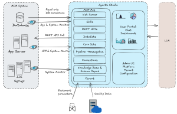
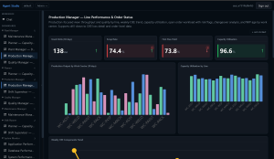
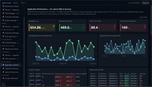
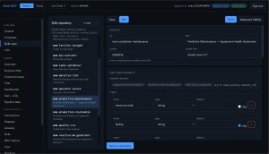

MoM-MCP: The Trusted Bridge Between AI and Manufacturing Operations
Artificial Intelligence is rapidly transforming manufacturing. From predictive analytics to autonomous scheduling, AI promises to improve productivity, quality, machine utilization, and operational visibility across the plant floor.
But one critical question continues to slow down AI adoption in Manufacturing Operations Management (MoM) and MES environments:
Can manufacturers truly trust AI to directly control shopfloor operations?
For many plant leaders, the answer today is still “not yet.”
Manufacturing environments are fundamentally different from consumer AI use cases. A wrong recommendation in a chatbot may create inconvenience. A wrong decision in a production environment can impact:
- Product quality
- Equipment reliability
- Production schedules
- Compliance requirements
- Worker safety
- Customer delivery commitments
This is exactly where MoM-MCP becomes the game changer.
What is MoM-MCP?
MoM-MCP is an intelligent middleware platform between Large Language Models (LLMs) and Manufacturing Operations Management (MoM/MES) systems.
Instead of allowing AI to directly manipulate shopfloor operations, MoM-MCP provides a controlled, governed, and structured operational layer that enables AI to safely assist manufacturing organizations.

This architecture eliminates one of the biggest concerns manufacturers have about AI adoption: loss of operational control and trustworthiness.
Why MoM-MCP Matters
1. AI Does Not Directly Control the MoM System
MoM-MCP acts as a governance and orchestration layer between the LLM and the manufacturing systems.
This means:
- AI cannot directly execute uncontrolled transactions
- Business rules remain protected
- Operational workflows stay compliant
- Human approval and governance remain in place
The result is a much safer and more trustworthy AI operating model for the shopfloor.
2. Prepackaged Industry KPIs and Role-Based Dashboards
Most AI projects fail because organizations spend months preparing dashboards, KPI definitions, and reporting structures before generating business value.
MoM-MCP accelerates deployment by providing predefined:
- Manufacturing KPIs
- Operational dashboards
- Role-based analytics
- Industry standard reporting models
These capabilities are immediately available for:
- Plant Managers
- Production Supervisors
- Schedulers
- Maintenance Teams
- Quality Engineers
- Shift Leaders
- Operational Executives

Organizations can move from implementation to value realization significantly faster.
3. Predefined Manufacturing Datasets
Manufacturing environments often contain fragmented data structures across MES, ERP, SCADA, historians, PLCs, and IIoT platforms.
MoM-MCP includes predefined datasets optimized for manufacturing operations, reducing the complexity and time required for system configuration and data preparation.
This dramatically shortens deployment cycles while improving data consistency for AI analysis.
4. Built-in System Monitoring and Performance Visibility
AI in manufacturing is only valuable when the underlying operational systems remain stable and reliable.
MoM-MCP provides predefined:
- System monitoring metrics
- Infrastructure dashboards
- Performance monitoring KPIs
- Integration health visibility
- Operational stability tracking

This allows organizations to monitor both manufacturing operations and the AI ecosystem itself with enterprise-grade reliability.
5. Intelligent Event Processing Through Message Bus Integration
Modern manufacturing generates massive amounts of real-time machine and process data.
MoM-MCP integrates with enterprise message bus architectures to capture:
- Machine runtime parameters
- Sensor readings
- Quality measurements
- Process conditions
- Device operational status
AI-driven analysis can then determine:
- Whether predictive maintenance work orders should be created
- Whether quality trends are drifting out of specification
- Whether corrective and preventive actions (CAPA) are required
- Whether operational adjustments are needed to prevent downtime or defects
This transforms raw machine data into actionable operational intelligence.
6. More Than 40 Predefined Manufacturing Skills
One of the most powerful capabilities of MoM-MCP is its predefined manufacturing AI skills framework.
These skills are designed around real operational roles and workflows across the plant.
Examples include:
- Production optimization
- Intelligent scheduling and rescheduling
- Machine utilization analysis
- Downtime investigation
- Quality trend analysis
- Shift performance review
- Maintenance planning
- Capacity balancing
- KPI forecasting
- Bottleneck identification
Each skill combines operational data from MoM systems and real-time device data to deliver actionable insights and operational recommendations.

This creates a practical and scalable AI operating model for manufacturing enterprises.
7. Natural Language Chat Capabilities for Manufacturing
MoM-MCP also introduces conversational manufacturing intelligence.
Users can interact with the system using natural language to:
- Understand production status
- Analyze manufacturing KPIs
- Generate operational reports
- Drill down into plant data
- Investigate downtime events
- Review quality trends
- Request operational summaries
- Analyze schedule impacts
This significantly lowers the barrier for data access across manufacturing organizations.
Instead of requiring deep technical knowledge or complex reporting tools, operational teams can simply ask questions and receive contextual manufacturing insights.
The Future of AI in Manufacturing Requires Trust
The future of manufacturing will absolutely include AI.
But successful adoption will not come from giving unrestricted AI access to critical operational systems.
It will come from creating trusted operational architectures that combine:
- AI intelligence
- Manufacturing governance
- Operational reliability
- Role-based workflows
- Human oversight
- Enterprise-grade monitoring
MoM-MCP represents that next-generation architecture.
It enables manufacturers to safely embrace AI-driven operations while maintaining the control, compliance, and operational confidence required on the shopfloor.
The future is not AI replacing manufacturing operations.
The future is AI empowering manufacturing teams through trusted operational intelligence.
#Manufacturing #MES #MOM #Industry40 #SmartManufacturing #AI #IndustrialAI #PredictiveMaintenance #QualityManagement #DigitalTransformation #ManufacturingOperations #IIoT #FactoryOfTheFuture #OperationalExcellence